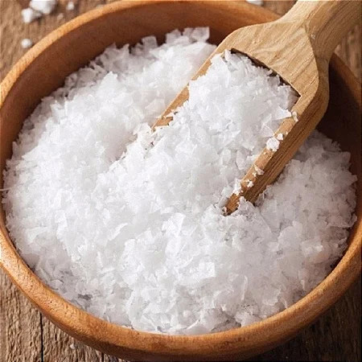

Flor de sal é um sal marinho extraído da camada superior de cristais nas salinas, conhecido por sua textura leve, crocante e sabor delicado. Ele serve para finalizar pratos, tanto doces quanto salgados, realçando o sabor sem derreter completamente, e deve ser adicionado apenas ao final do preparo, nunca durante o cozimento.
